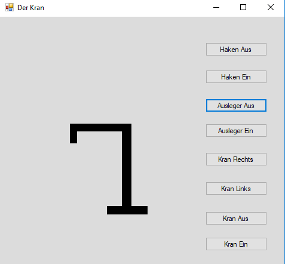
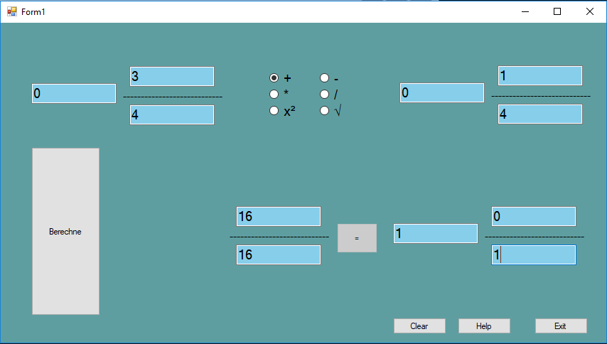
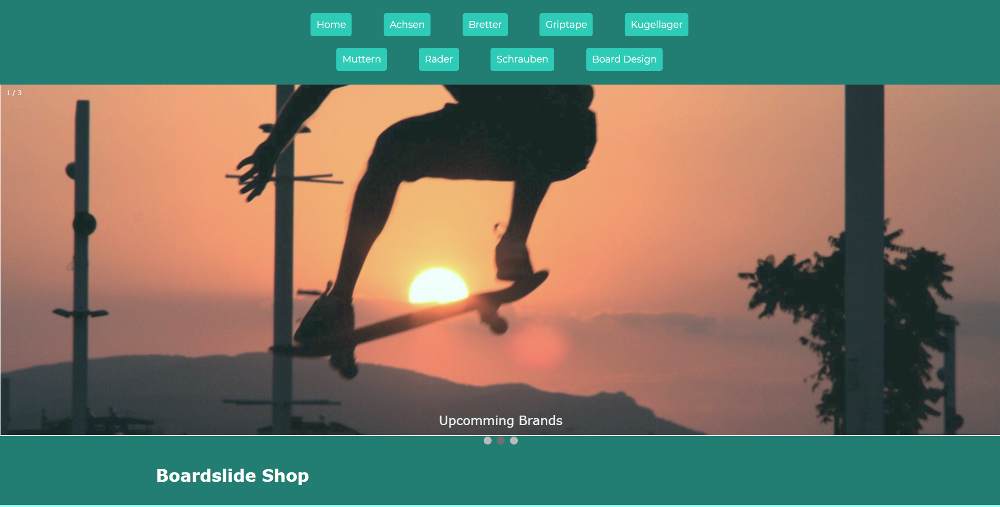

Kleiner Disclaimer:
Ich weiß das diese Seite nicht fertig und noch lange nicht Perfekt ist. Ich habe diese Seite geschrieben, um grob zu zeigen, was ungefähr meine Fähigkeiten sind. Ich weiß, dass es ein Paar Bugs mit den bxSlider gibt, die ich noch nicht lösen konnte. Dennoch schließe ich dieses Projekt ab, um mit anderen dingen anzufangen und dort meine Skills beim Programmieren zu verbessern und nicht mit HTML und CSS/SASS.
Ich hoffe, trotzdem das ihr Spaß auf meiner Seite habt. Mehr zu meinen kommenden Projekten, kann man unter letzte Worte lesen. Und nun gehts Los.
Moin, ich bin Arin und mache aktuelle ein Fachabitur im Bereich Elektronik und Informationstechnik. Während der zeit habe
ich bis jetzt überwiegen in der Schule was über Elektronik, dabei speziell eigene Platinen Löten und nach
Schaltpläne bauen, Berechnung von Schaltungen und Messen von Spannung und Strom. Im Bereich IT haben wir
überwiegend was im Bereich SQL und C# gemacht. Der Stoff in der Schule vor allem im Bereich IT war nicht
so lehrreich und informativ wie ich mir gewünscht hätte. Daher habe ich zu Hause mir vor allem Webapp Entwicklung
angeschaut. Da ich schon vor der Schule HTML und CSS konnte, fing ich an mir die neusten Updates anzuschauen
(HTML5 und CSS3). Danach fing ich an mit Javascript, um meine Seiten Dynamischer zu gestalten. Dann kam eine
pause, von 2 Monaten, da dort die ganzen letzten Klausuren der Unterstufe waren und ich da am meisten Zeit
hereinstecken wollte, um gute Noten zu bekommen. Im schulischen Praktikum, das ich bei der eLearning Manufaktur
gemacht habe wurde mir Jquery gezeigt, das ist mein erstes Javascript Framework was ich gelernt habe. Parallel
zum Praktikum habe ich mir Sass angeschaut, was auch mein erstes CSS Framework ist. Aktuell bin ich Software
technisch meine Javascript und Sass Skills weiter zu entwickeln. Hardware technisch bin ich aktuell mit meinen
Raspberry Pi einen Webserver mit Cloudspeicher zu bauen. Also zu dem Zeitpunkt wo Sie das hier lesen bin
ich schon fertig, da diese Seite auf den Raspberry läuft. Ich bin gespannt, was mich in meiner Zukunft erwarten
wird. Das was ich jetzt weiß ist das viele Projekte noch folgen werden.
Schulprojekte
-
Der Kran
Das war das erste größere Projekt im UnterrichtDer KranDas war das erste größere Projekt im Unterricht mit der Sprache C#. Die Aufgabe war gewesen einen Kran zu entwickeln der den Arm Ausfahren kann und den Hacken rauf und runter fahren kann. Als Erstes habe ich mich um das Design des Krans gekümmert. Ein Paar Buttons und fertig war die Geschichte.
Danach begann ich dann den Buttons leben zu geben. Angefangen habe ich dann mit den Hacken Funktionen, dafür habe ich eine einfache Funktion geschrieben, die einen Wert entgegennimmt. Bei der wird der gegebene wert der Hacken mit hacken.height += i um den wert I erweitert. Dadurch wird dann die Höhe des Hackens verstellt.//
// Haken Ausfahr
//
private void btc_HakenAus_Click(object sender, EventArgs e)
{
HakenControl(10); //Verweis auf die Methode HakenControl
}
//
// Haken Einfahr
//
private void btc_HakenEin_Click(object sender, EventArgs e)
{
if (Haken.Height > 20)
HakenControl(-10); //Verweis auf die Methode HakenControl
else MessageBox.Show("Der Haken kann nicht kürzer werden");
}
//
// Haken Kontrollen Methode
//
private void HakenControl(int i)
{
Haken.Height += i; //Haken wird um i in der der Höhe verlängert
}
Danach habe ich mich darum gekümmert das man den Ausleger weiter nach vorn oder hinten bewegen kann. Dafür habe ich keine Funktionen geschrieben, sondern habe alles direkt in die Buttons geschrieben. Dabei wurde überprüft, ob die Länge über 10 liegt. Wenn die If abfrage true ist, dann wird der Hacken und als Ausleger 10px erweitert, beim Einfahren ist es fast identisch nur das sich die if Abfrage ändert da es dort nicht kleiner als 0 werden soll.
//
// Ausleger Ausfahr
//
private void btc_AuslegerAus_Click(object sender, EventArgs e)
{
int i = 10; // i wird mit 10 deklariert
AuslegerPanel.Width += i; //Ausleger Weite wird mit 10 erweitert
if (AuslegerPanel.Width > 10) //Abfrage ob die Weite noch über 10 liegt
{
AuslegerPanel.Left -= i; //Ausleger wird um 10 Pixel nach Links verschoben
Haken.Left -= i; //Haken wird um 10 Pixel nach Links verschoben
}
}
//
// Ausleger Einfahr
//
private void btc_AuslegerEin_Click(object sender, EventArgs e)
{
if (AuslegerPanel.Width > 50)
{
int i = 10; //i wird mit 10 deklariert
AuslegerPanel.Width -= i; //Ausleger wird um 10 Pixel verkürzt
if (AuslegerPanel.Width != 0) //Prüfung ob Auslegher nicht 0 ist
{
AuslegerPanel.Left += i; //Ausleger wird um 10 Pixel nach Rechts verschoben
Haken.Left += i; //Haken wird um 10 Pixel nach Rechtss verschoben
}
}
else MessageBox.Show("Der Ausleger kann nicht kürzer werden");
}
Dann kam relative viel gleicher Code. Da ging es um die Bewegung des Krans. Dabei habe ich den funktions Aufruf wie bei dem hacken und die rechts links Bewegung sind keine Unterschiede. Der Code steht trotzdem hier drunter.
//
// Kran Nach Rechts
//
private void btc_KranRechts_Click(object sender, EventArgs e)
{
KranBewegung(10); //Verweis auf die Kran Bewegungs Methode
}
//
// Kran Nach Links
//
private void btc_KranLinks_Click(object sender, EventArgs e)
{
KranBewegung(-10); //Verweis auf die Kran Bewegungs Methode
}
//
// Kran Hals Einfahren
//
private void btc_KranHalsEinfahren_Click(object sender, EventArgs e)
{
if (KranHals.Height > 30) //Abfrage ob der Kran Hals größer als 30 pixel ist
{
KranHals.Height -= 10; //Kran Hals wird um 10 Pixel verkürzt
KranHals.Top += 10; //Kran Hals wird um 10 Pixel nach unten geschoben
KranHalsBewegung(10); //Verweis auf die Kran Hals Bewegungs Methode
}
else MessageBox.Show("Der Hals kann nicht noch kürzer");
}
//
// Kran Hals Ausfahren
//
private void btc_KranHalsAusfahren_Click(object sender, EventArgs e)
{
if (KranHals.Height < 300)
{
KranHals.Height += 10; //Kran Hals Höhe wird um 10 Pixel verlängert
KranHals.Top -= 10; // Kran Hals wird um 10 Pixel nach oben verschoben
KranHalsBewegung(-10); //Verweis auf die Kran Hals Bewegungs Methode
}
else MessageBox.Show("Der Hals kann nicht höher");
}
//
// Kran Hals Methode
//
private void KranHalsBewegung(int i)
{
Haken.Top += i; //Haken wird um i verschoben
AuslegerPanel.Top += i; //Ausleger wird um i verschoben
}
//
// Kran Bewegung Methode
//
private void KranBewegung(int i)
{
Haken.Left += i; //Haken wird um i nach Links oder Rechts verschoben
AuslegerPanel.Left += i; //Ausleger wird um i nach Links oder Rechts verschoben
KranHals.Left += i; //Kran Hals wird um i nach Links oder Rechts verschoben
Rumpf.Left += i; //Rumpf wird um i nach Links oder Rechts verschoben
}
-
Bruchrechner
Bei diesem SchulprojektBruchrechnerBei diesem Schulprojekt, was gegen Ende des Schuljahres war, konnten wir uns ein Projekt heraussuchen. Da habe ich mich für den Bruchrechner entschieden da es für mich das Schwerste war, das man dort auswählen konnte, da man keine .math class zur Verfügung hatte und den Bruch als Wurzel nehmen können muss laut Aufgabe. Als ich zu Hause angefangen hatte arbeitete ich als Erstes das Design aus und fing an einfache Funktionen einzufügen (Help, Exit Buttons). Dazu gibt es nichts Interessantes. Danach habe ich angefangen meine Inputs variablen zu geben.
int fInteger = Convert.ToInt32(firstInteger.Text); //Input of the varibel (Standard Setting to 0
int fCounter = Convert.ToInt32(counterOne.Text);
int fDeno = Convert.ToInt32(firstDenominator.Text);
int sInteger = Convert.ToInt32(secondInteger.Text);
int sCounter = Convert.ToInt32(secondConter.Text);
int sDeno = Convert.ToInt32(secondDenominator.Text);
Nachdem die Inputs gegeben waren habe ich eine ellenlange if abfrage genommen die checkt, welche rechen art man über die Radio Buttons ausgewählt hat. Zu der Zeit vielen mir Switch Case Anwendungen noch fremd und zu Kompliziert ^^.
//If statemens to proof what needs to Calculate
// if the radio button is true the following function will Calculate
if (plus.Checked == true)
{
Add(fInteger,fCounter,fDeno,sInteger,sCounter,sDeno); // Jump to the Add function with the named Parameter
}
else if (minus.Checked == true)
{
Minus(fInteger, fCounter, fDeno, sInteger, sCounter, sDeno); // Jump to the Minus function with the named Parameter
}
else if (times.Checked == true)
{
Times(fInteger, fCounter, fDeno, sInteger, sCounter, sDeno); // Jump to the Times function with the named Parameter
}
else if (divide.Checked == true)
{
Divided(fInteger, fCounter, fDeno, sInteger, sCounter, sDeno); // // Jump to the Divided function with the named Parameter
}
else if (carrotTwo.Checked == true)
{
Square(fInteger, fCounter, fDeno); // Jump to the Square function with the named Parameter
}
else if (root.Checked == true)
{
double counter = fInteger * fDeno + fCounter; //creating a counter of the first fraction
double fraction = counter / fDeno; // making the whole fraction to decimal number
MessageBox.Show(Convert.ToString(fraction)); //Print the Fraction decimal
MessageBox.Show(Convert.ToString(Root(fraction))); //Jump to Root dunction with fraction as parameter
}
else
MessageBox.Show("Wählen sie eine Rechenart aus"); //if no radio button is selected
Wie man hier sehen kann leiten die If-abfragen zu den verschiedene Funktionen. Die Funktionen sind recht selbsterklärend. Die einzigen Ausnahmen waren die Wurzel Rechnung (diese ist auch nicht super genau und hat Abweichungen) und das Kürzen waren Kopf zerbrechend für mich gewesen. Da ich nie wirklich stark in Mathematik war habe ich nach 2 stunden selbst versuch im Internet nach einer Metohde gesucht, auf die ich nie gekommen wäre. Diese Funktion hat auch einen namen, und zwar Binary numeral system Algorithm.
public void Add(int fInteger, int fCounter, int fDeno, int sInteger, int sCounter, int sDeno)
{
int fractionDeno = fDeno * sDeno; // is making the Denomation(nenner)
int fractionCounter = (((fInteger * fDeno + fCounter) * sDeno) + ((sInteger * sDeno + sCounter) * fDeno)); //Algorithm to calculate fraction add
int fractionInteger = fractionCounter / fractionDeno; //calculating the integer of the Function
//Output of the raw fraction
FRCounter.Text = Convert.ToString(fractionCounter);
fRDenominator.Text = Convert.ToString(fractionDeno);
// Jumping to the Shorting function
Shorting(fractionCounter, fractionInteger, fractionDeno);
}
public void Minus(int fInteger, int fCounter, int fDeno, int sInteger, int sCounter, int sDeno)
{
int fractionDeno = fDeno * sDeno; // is making the Denomation(nenner)
int fractionCounter = (((fInteger * fDeno + fCounter) * sDeno) - ((sInteger * sDeno + sCounter) * fDeno)); //Algorithm to calculate fraction minus
int fractionInteger = fractionCounter / fractionDeno; //calculating the integer of the Function
//Output of the raw fraction
FRCounter.Text = Convert.ToString(fractionCounter);
fRDenominator.Text = Convert.ToString(fractionDeno);
// Jumping to the Shorting function
Shorting(fractionCounter, fractionInteger, fractionDeno);
}
public void Times(int fInteger, int fCounter, int fDeno, int sInteger, int sCounter, int sDeno)
{
int fractionCounter = (fInteger * fDeno + fCounter) * (sInteger * sDeno + sCounter); //Algorithm to calculate fraction multiply
int fractionDeno = fDeno * sDeno; // is making the Denomation(nenner)
int fractionInteger = fractionCounter / fractionDeno; //calculating the integer of the Function
//Output of the raw fraction
FRCounter.Text = Convert.ToString(fractionCounter);
fRDenominator.Text = Convert.ToString(fractionDeno);
// Jumping to the Shorting function
Shorting(fractionCounter, fractionInteger, fractionDeno);
}
public void Divided(int fInteger, int fCounter, int fDeno, int sInteger, int sCounter, int sDeno)
{
int fractionCounter = (fInteger * fDeno + fCounter) * sDeno; //taking the reciprocal(Kehrwert) and multiplay
int fractionDeno = (sInteger * sDeno + sCounter) * fDeno; //same as above
int fractionInteger = fractionCounter / fractionDeno; //calculating the integer of the Function
//Output of the raw fraction
fRDenominator.Text = Convert.ToString(fractionDeno);
FRCounter.Text = Convert.ToString(fractionCounter);
// Jumping to the Shorting function
Shorting(fractionCounter, fractionInteger, fractionDeno);
}
public void Square(int fInteger, int fCounter, int fDeno)
{
int fractionCounter = (fInteger * fDeno + fCounter) * (fInteger * fDeno + fCounter); //Algorithm to calculate fraction multiply
int fractionDeno = fDeno * fDeno; // is making the Denomation(nenner)
int fractionInteger = fractionCounter / fractionDeno; //calculating the integer of the Function
//Output of the raw fraction
FRCounter.Text = Convert.ToString(fractionCounter);
fRDenominator.Text = Convert.ToString(fractionDeno);
// Jumping to the Shorting function
Shorting(fractionCounter, fractionInteger, fractionDeno);
}
public static double Root(double calc) //Binary numeral system Algorithm (Thanks Github now you are dead)
{
double precision = 0.00001; //the precision of the root
double low = 0; //the low point
double high = calc; //the user input is high
double mid = 0; //the mid point
while ((high - low) > precision) //while this parameter
{
mid = (double)((low + high) / 2);
//if tree that runs as long mid is smaler mid*mid then mid - precision and mid is greater then precision plus mid
if ((mid - precision) >= mid * mid && mid * mid <=( precision + mid))
break;//it to the limit
else if (mid * mid < calc)
low = mid;
else
high = mid;
}
return mid;
}
Die Kürzungen Methode war recht einfach im Gegensatz zu der Wurzel Methode. Bei der Kürzungs Methode habe ich auch im Internet ab einen gewissen Punkt geschaut. Da hat mir der Euklidischer Algorithmus weitergeholfen und konnte diesen erfolgreich Implementieren.
public void Shorting(int fractionCounter, int fractionInteger, int fractionDeno)
{
int Rest = fractionCounter - fractionInteger * fractionDeno;
int ggt = berechneGgt(Rest, fractionDeno);
//Output of the raw fraction
sRInteger.Text = Convert.ToString(fractionInteger);
sRCounter.Text = Convert.ToString(Kürze(Rest, ggt));
sRDenominator.Text = Convert.ToString(Kürze(fractionDeno, ggt));
}
public int berechneGgt(int Zaehler, int Nenner) //Euklidischer Algorithmus
{
int zahl1 = Zaehler;
int zahl2 = Nenner;
int temp = 0;
int ggt = 0;
while (zahl1 % zahl2 != 0)
{
temp = zahl1 % zahl2;
zahl1 = zahl2;
zahl2 = temp;
}
ggt = zahl2;
return ggt;
}
public int Kürze(int Zahl, int ggt)
{
int ZahlRef = Zahl;
int ggtRef = ggt;
int Ergebniss = ZahlRef / ggtRef;
return Ergebniss;
}
Gegen Ende habe ich noch einen clear button eingefügt da es dafür 5 punkte mehr gab.
private void btn_clear_Click(object sender, EventArgs e)
{
//Clearing all inputs
firstInteger.Text = "0";
counterOne.Text = "0";
firstDenominator.Text = "0";
secondConter.Text = "0";
secondDenominator.Text = "0";
secondInteger.Text = "0";
}
-
Boardslide Shop
Das hier war das größteBoardslide ShopDas hier war das größte und aufwendigste Schulprojekt das wir hatten. Für das Projekt sollten wir eine Webanwendung schreiben mit der wir auf Datenbancken mit PHP zugreifen sollten. Als erstes haben wir uns eine Topic ausgsucht, die war auch dann ein Skateshop, danach haben wir dann unseren SQL Code geschrieben. Dieser blieb relativ Simple mit wenig oder keinen verbindungen zu anderen Datenbanken. Wir haben jeweils eine Datenbank für Muttern, Boards, Schrauben, und alles was dazu gehört eine eigene Datenbank angelegt.
CREATE DATABASE FahrbareUntersaetze;
USE FahrbareUntersaetze;
CREATE TABLE Board_Art
(
ID INT NOT NULL AUTO_INCREMENT,
BoardART VARCHAR(35) NOT NULL,
PRIMARY KEY(ID)
);
CREATE TABLE Schrauben
(
ID INT NOT NULL AUTO_INCREMENT,
SchraubenTYPEN VARCHAR(15) NOT NULL,
SchraubenPREIS INT NOT NULL,
SchraubenHERSTELLER VARCHAR(40) DEFAULT 'unbekannt',
PRIMARY KEY(ID)
);
CREATE TABLE Muttern
(
ID INT NOT NULL AUTO_INCREMENT,
MutterTYP VARCHAR(15) NOT NULL,
MutterPREIS INT NOT NULL,
MutterHERSTELLER VARCHAR(40) DEFAULT 'unbekannt',
PRIMARY KEY(ID)
);
CREATE TABLE Achsen
(
ID INT NOT NULL AUTO_INCREMENT,
AchsenTYP VARCHAR(30) NOT NULL,
AchsenPREIS INT NOT NULL,
AchsenHERSTELLER VARCHAR(40) DEFAULT 'unbekannt',
PRIMARY KEY(ID)
);
CREATE TABLE Raeder
(
ID INT NOT NULL AUTO_INCREMENT,
RaederMATERIAL VARCHAR(30) NOT NULL,
RaederPREIS INT NOT NULL,
RaederHERSTELLER VARCHAR(40) DEFAULT 'unbekannt',
PRIMARY KEY(ID)
);
CREATE TABLE Kugellager
(
ID INT NOT NULL AUTO_INCREMENT, /*eS GIBT KEIN iDENTITY*/
KugellagerTYP VARCHAR(15) NOT NULL,
KugellagerPREIS INT NOT NULL,
KugellagerHERSTELLER VARCHAR(40) DEFAULT 'unbekannt',
PRIMARY KEY(ID)
);
CREATE TABLE Griptape
(
ID INT NOT NULL AUTO_INCREMENT,
GriptapeMATERIAL VARCHAR(20) NOT NULL,
GriptapePREIS INT NOT NULL,
GriptapeHERSTELLER VARCHAR(40) DEFAULT 'unbekannt',
PRIMARY KEY(ID)
);
CREATE TABLE Brett
(
ID INT NOT NULL AUTO_INCREMENT,
BrettMATERIAL VARCHAR(15) NOT NULL,
BrettPREIS INT NOT NULL,
BrettHERSTELLER VARCHAR(40) DEFAULT 'unbekannt',
PRIMARY KEY(ID)
);
Nachdem wir die SQL Geschichte abgeschlossen hatten haben wir uns dann an die PHP Scripts gesetzt. Dafür brauchten wir dann nur 3 Stück. Eine fürs Löschen und fürs Sortieren. Die fürs Sortieren hat einer aus der Gruppe gemacht. Mit diesem Script kann man alles Alphabetisch sortieren nach den Radiobuttons.
<html>
<form method = "post">
Nach dem Alphabet<input type="radio" name="radioButton" value="">
</form>
</html>
Ich habe den Delete Script geschrieben. Da habe ich als erstes Verbindung mit der Datenbank aufgenommen. Danach wird geprüft, ob die post Nachricht eine Nachricht hat und dann wird der jeweilige Datensatz gelöscht.
<?php $db = new mysqli("localhost","root","root","fahrbareuntersaetze");
if(isset($_POST['txt_del'])){
$del = $_POST['txt_del'];
$db->query("DELETE FROM $tableName WHERE ID = $del");
echo "<script> window.location.replace('$link') </script>";
}
?>
Dann hat ein Weiterer aus der Gruppe die Eingabe Funktion geschrieben. Das war auch das erste PHP Script was wir hatten. Bei dem Script habe ich aber die Übersicht verloren, was generell in dem Gruppen Projekt eine Herausforderung war. Ich sehe, da nicht wirklich durch deshalb kein Script.
In den Gruppen Projekt habe ich auch ein kleines js Script geschrieben. Das war mein erstes js Script was ich in einem Projekt selbst geschrieben habe teilweise hatte ich, aber auch was von Stackoverflow rüberkopiert da es auch recht eilig war.
var slideIndex = 0;
showSlides();
function showSlides() {
var i;
var slides = document.getElementsByClassName("mySlides");
var dots = document.getElementsByClassName("dot");
for (i = 0; i < slides.length; i++) {
slides[i].style.display = "none";
}
slideIndex++;
if (slideIndex > slides.length) {slideIndex = 1}
for (i = 0; i < dots.length; i++) {
dots[i].className = dots[i].className.replace(" active", "");
}
slides[slideIndex-1].style.display = "block";
dots[slideIndex-1].className += " active";
setTimeout(showSlides, 5000); // Change image every 2 seconds
}
Das waren regelrecht die interessantesten Sachen des Projektes gewesen. Wenn man das CSS oder html sehen will, kann man unter folgenden Github Link nachschauen.
FreeCodeCamp Projekte
-
Nikola Tribute Page
Bei meinen FreeCodeCamp Projekten Nikola Tribute Page
Nikola Tribute PageBei meinen FreeCodeCamp Projekten habe ich nur HTML und CSS angewendet. Diese Projekte habe ich im April diesen Jahren gemacht. Diese Projekte waren sehr angenehm um wieder mit dem Umgang von HTML und CSS zu gewöhnen.
Bei diesem Projekt sollte man eine Tribute Page machen. Dabei habe ich teile von Bootstrap verwendet. Diese Habe ich auch über Nicola Tesla gemacht. Zur Seite selbst gibt nicht viel Besonderes eine größere Box mit einem Porträt, Namen und was er gemacht hat. Danach eine Kleine Auflistung die Bisschen größer als die Boxen davor ist um als Eyecatcher zu wirken.
Portfolio

Bei meinen FreeCodeCamp Projekten habe ich nur HTML und CSS angewendet. Diese Projekte habe ich im April diesen Jahren gemacht.
Diese Projekte waren sehr angenehm um wieder mit dem Umgang von HTML und CSS zu gewöhnen.
Bei diesem Projekt sollte man ein Portfolio anlegen. Dort habe ich es anders als hier gemacht.
Den dort habe ich kein js verwendet und war damit nicht mehr zufrieden gewesen. Das einzigst besondere war das Design gewesen was
ich dort verwendet habe.
Cube Mainac Survey

Bei meinen FreeCodeCamp Projekten habe ich nur HTML und CSS angewendet. Diese Projekte habe ich im April diesen Jahren gemacht.
Diese Projekte waren sehr angenehm um wieder mit dem Umgang von HTML und CSS zu gewöhnen.
Bei diesem Projekt habe ich ein Survey für eine Speed Cubing Website gemacht, diese Seite gibt es aber nicht nur das Survey.
Da hatte ich viel Spaß gehabt beim Designen da mir die Farben sehr gefielen die ich da verwendet hatte. Mehr besonderes gibt es aber nicht.
Eigene Projekte
-
Praktikums Projekt
Dieses Projekt habe ich während des Praktikum Praktikums Projekt
Praktikums ProjektDieses Projekt habe ich während des Praktikums bei der eLearning Manufaktur gemacht. Hier habe ich die Website mithilfe von Jquery dynamisch gemacht. Das erste was ich da gemacht hatte, war ein Kalender, auf den man die einzelnen Tage anklicken kann und dann öffnet sich ein Layer, in dem dann ein Text steht, was ich an diesen Tag gemacht habe. Dafür habe ich zwei Funktionen geschrieben die jeweils den Layer öffnen und schließen. Bei der ersten Funktion collapse wird dem Layer die Klasse is-hidden angefügt damit diese nicht mehr sichtbar ist. Dabei wird der Highlight Farbton von dem Tag entfernt und dem Overlay auch die Klasse is-hidden hinzugefügt. Bei der Unfold Klasse werden überall oben die is-hidden Klassen entfernt. Dazu wird der vorherige Layer geschlossen, damit später nicht 10 Layer da sind die man dann selber schließen muss.
let calenderDayOpenerCloser = {
$currentOpenedDayLayer_: undefined,
collapse: function () {
if (this.$currentOpenedDayLayer_) {
this.$currentOpenedDayLayer_.addClass('is-hidden');
this.$currentOpenedDayLayer_ = undefined;
let $body = $('body');
let $calendarEntries = $body.find('div.calender div.days');
$calendarEntries.removeClass('highlighted');
$body.find('div.overlay').addClass('is-hidden higher-index');
}
},
unfold: function ($calendarEntry) {
this.collapse();
let $body = $('body');
let $layer = $body.find('.layer[id="' + $calendarEntry.attr('id') + '-block"]');
$layer.removeClass('is-hidden');
$calendarEntry.addClass('highlighted');
$body.find('div.overlay').removeClass('higher-index is-hidden');
this.$currentOpenedDayLayer_ = $layer;
},
openNext: function($arrow){
calenderDayOpenerCloser.collapse();
calenderDayOpenerCloser.unfold($arrow);
}
};
window.calenderDayOpenerCloser = calenderDayOpenerCloser;
Danach habe ich eine Scroll Animation hinzugefügt damit man beim klicken des Links nicht über die Seite springt, sondern angenehm schnell über die Seite springt. Dazu sucht der Body als Erstes alle anchor und danach holt dieser sich dann alle href Attribute und gibt diese dann die Eigenschaft smooth.
let anchorScrollAnimator ={
scrollAnimator: function(){
document.querySelectorAll('a[href^="#"]').forEach(anchor => {
anchor.addEventListener('click', function (e) {
e.preventDefault();
document.querySelector(this.getAttribute('href')).scrollIntoView({
behavior: 'smooth'
});
});
});
}
};
window.anchorScrollAnimator = anchorScrollAnimator;
Danach habe ich dann eine Bildvergrößerung geschrieben. Diese Passiert, wenn man auf ein Bild klickt, dann wird nämlich das Bild vergrößert, damit es besser sehen kann und dann auch schließen kann. Bei dem geöffneten Bild wird die big-picture Klasse hinzugefügt, dahinter wird das Overlay geöffnet und der Exitbutton wird sichtbar. Beim Schließen ist das halt gegenteilig.
let enlargeReducePicture = {
enlargePicture: function ($pic) {
$pic.addClass('big-picture');
$pic.removeClass('thumbnail');
let $body = $('body');
$body.find('div.overlay').removeClass('is-hidden');
$body.find('button').removeClass('is-hidden');
},
decreasePicture: function($pic) {
$pic.removeClass('big-picture');
$pic.addClass('thumbnail');
let $body = $('body');
$body.find('div.overlay').addClass('is-hidden');
$body.find('button').addClass('is-hidden');
}
};
window.enlargeReducePicture = enlargeReducePicture;
Beim Slider gibt es eine Besonderheit, abgesehen davon das dieser mit dem bxslider gemacht worden ist, sucht sich dieser auch die Bilder auf der Website zusammen. Damit kann man sich es Sparen mehrere gleiche Bilder zu verwenden.
$(document).ready(function(){
const image = ('');
$('body').find('img.slider-pic').each(function () {
let $pic = $(this);
slider = ('});
$('.slider').bxSlider();
});
Das einzigste Interessante ist vielleicht noch das Hauptdokument Application. In der werden alle andere Dokumente aufgerufen. Daher wirken die anderen Dokumente wie Klassen. Diese werden in dem Dokument zusammen geschmissen und aufgerufen.
let Application = function(calenderDayOpenerCloser, enlargeReducePicture, anchorScrollAnimator) {
this.calenderDayOpenerCloser = calenderDayOpenerCloser;
this.enlargeReducePicture = enlargeReducePicture;
this.anchorScrollAnimator = anchorScrollAnimator;
this.themeSwitcher = themeSwitcher;
};
Application.prototype.run = function() {
$('body').find('div.days').each(function() {
let $calendarEntry = $(this);
$calendarEntry.on('click', function() {
calenderDayOpenerCloser.unfold($calendarEntry);
});
});
$('body').find('button.exit').each(function() {
let $layer = $(this);
$layer.on('click', function() {
calenderDayOpenerCloser.collapse();
})
});
$('body').find('div data-dayLink').each(function(){
let $arrow = $(this);
console.log($arrow)
$arrow.on('click', function () {
calenderDayOpenerCloser.openNext($arrow);
});
});
$('body').find('div .click-me').each(function() {
let $pic = $(this);
$pic.on('click', function() {
enlargeReducePicture.enlargePicture($pic);
});
});
$('body').find('button').each(function() {
let $button = $(this);
$button.on('click', function() {
enlargeReducePicture.decreasePicture($('body').find('div .click-me'));
});
});
$('body').find('a').each(function(){
let anchor = this;
anchor.addEventListener('click', function() {
anchorScrollAnimator.scrollAnimator();
});
});
$('body').find('.themes').on('change', function(){
themeSwitcher.themeSwitcher();
})
};
window.Application = Application;
Das war es größtenteils auf der Seite, wenn man mehr sehen will, kann man es unter diesen Link auf GitHub.
Blog
Ich hatte auch noch meinen ersten Ansatz
BlogIch hatte auch noch meinen ersten Ansatz eines Blockes gemacht. Diesen hatte ich auch bei einem Webhost Hochgeladen. Da aber diese Seite gelöscht wurde wegen Inaktivität, da der Anbieter kostenlos war und ich beim Reset meines PC´s alle meine Projekte gelöscht wurden, da wusste ich anscheinend noch nicht wozu man Clouds verwendet oder GitHub, habe ich nichts mehr davon bis auf das Bild. Die “Blog„ an sich hat viel Spaß gemacht. Er hatte zwar kein js gehabt aber hatte seine Tücken mit dem CSS gehabt.
Letzte Worte
Kommende Projekte.
Letzte WorteKommende Projekte. Wenn wir wieder stabiles Internet haben werde ich meinen Raspberry Pi Server Starten und diesen als Webserver verwenden. Unter anderen um dann auch mal was mit Node js was zu machen, worauf ich mich sehr freue. Dabei werde ich auch meine eigene Cloud machen und paar elektrotechnische Elemente mit einbinden, das aber mit der Hilfe vom Arduino. Ideen fürs Node js Projekt habe ich auch schon, und zwar einen Online Speed Cube Timer der auch mithilfe des js Frameworks d3.js, damit man dann seine Aktivität und auch seinen Fortschritt sehen kann. Da werde ich mich dann auch mit Logins und all so ein Schnick schnack verwenden um die Basics von Node drauf zuhaben. Danach wollte ich eventuell eine eigene 8-Bit CPU bauen, um mehr von der PC Logik zu verstehen und auch elektrotechnisch dabei zu bleiben. Parallel werde ich dann an meinen Blog Arbeiten um meine Node und generellen js Skills zu verbessern.
Dazu habe ich auch jetzt einen Codewars Account, den man hier bei Interesse finden kann.
Ich hoffe, man hatte Spaß auf meiner Seite.
Ich wünsche noch einen schönen Tag.